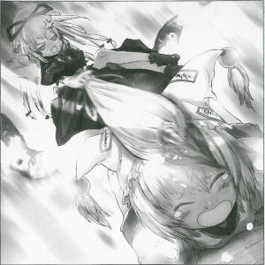
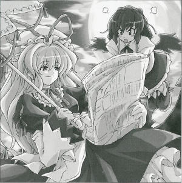

|
3rd of the Leaf Month (August), Season 119
Youkai Practices Animal Abuse The silent terror that assaults our pastoral GensokyoO Month O Day, at around 26 o'clock, I suddenly heard a cry similar to that of a fox's. It did not seem like a trifling matter, so I rubbed my sleepy eyes and headed for the scene. When I arrived, I saw in front of me a fox being dominated, a truly shocking view of animal abuse. As I am a crow tengu, this case is extremely heart-wrenching. The offender of this animal abuse is Yukari Yakumo (Youkai). She's a one-of-a-kind type of youkai whose residence is unknown; she unexpectly appears and disappears, and her being itself is a mystery. She always wears flashy clothes and an eerie smile, so everytime I meet her I'm a little overwhelmed. The offender had this to say regarding her animal abuse: Animal abuse? My, when did I ever do such a thing? Aah, you mean this Ran here. This isn't abuse, just a little disciplining. Besides, Ran may look like a fox but she's a shikigami. She's not an animal. Since the offender's words are completely illogical nonsense which any normal person would not easily comprehend, I've taken the liberty of interpreting it such a way that will make things clearer. The offender's phrases can be explained as followed. Ran, the fox that was being abused, is not an animal at all but a shikigami. Shikigami are not animals, but rather merely tools, and the more one uses tools the more love there is. That is why she uses her frequently. She says that just loving is not enough, that this is another form of love as she smacks the fox's head with her parasol. Listen. Shikigami need only to do as they are ordered. Today, you went ahead and fought with humans, didn't you? I do not recall ordering that. No matter what happens before your eyes, even before any danger that may approach you, you are only to do as I say. That's what's best for you. The offender continues with her irrational claims, and was attempting to justify her abuse. As I am half animal, I intend to further pursue this.
(Aya Shameimaru)
|
|
 Yukari I see. And? Aya I will not forgive animal abuse. Yukari I'm not abusing any beast. Besides, you're the one that wrote this, no? Then you should fully understand. Aya I do not understand what you are saying. What I witnessed was nothing other than animal abuse. Yukari Viewing things from only one point of view shows that you lack imagination and analysis skills. Even if the answer is in front of your eyes then, you'll be blind to it. That's because you can only see the back side of the answer. In reality, you're doing pretty well as a reporter. Aya Even if I do not understand what you are saying, if I look at the truth I will. That is because my job is to tell only the truth. Yukari Even if you can see, with holes for eyes you won't be able to look at any truth. Your newspaper is going to stay shoddy that way. Aya Bunbunmaru Newspaper is not anything near shoddy! Yukari At any rate, I'll explain once again for the sake of Ran's honour. That isn't abuse, it's discipline. Ran is a shikigami, so if she doesn't do exactly as I say she can't make use of her full strength. Even so, she ignored orders and went off and fought with humans. So I scolded her. Aya ...Wouldn't she be in danger if she didn't fight? Yukari Not at all. The only danger is from fighting. Do you understand? Ran is not a fox, but a shikigami. Aya That is what I do not understand. Exactly how are they different? Yukari By following my will, shikigami can achieve power equal to my level. Therefore, if she properly follows my orders, it would be impossible for her to lose. If she takes selfish actions, her power will be weakened to something that can't even be compared to mine. Fighting in that state is nothing other than foolish. Aya What if she was sure she could win like that? Yukari With a more definite method of victory on hand, what need is there to choose a hazardous one? That would only end up with Ran in danger. That's why unless I teach her with slightly stricter means, it won't help Ran at all. Aya ...... Yukari And besides, Ran occasionally forgets that she's a shikigami. But that is an extremely dangerous thing. If she does not grasp her true nature, her power will easily veer of course. I did leave her alone while I was sleeping so that can't be helped. But at the very least, it seems like she definitely won't forget who is her master. Aya Essentially, isn't she just afraid of the abuse? Yukari Difference in power. Also, virtue. Aya I will not be fooled by your selfish convenient explanations. Yukari You really can't grasp things. Aya I am only burning in righteous anger. Whatever reason you may have, I cannot overlook abuse. Yukari My, my, you're quite the cute one. Aya Wh, what are you--- Yukari If you can't understand, want to give it a shot? Become my shikigami. If you do, I think you'll be able to understand. Aya I am against animal abuse! Profile: Yukari Yakumo A youkai living in Gensokyo from old, and has the ability to control boundaries. As an old friend of Yuyuko, she is sometimes asked for favors from her. Usually sleeps during the day, but possesses enormous power. Appearances: Perfect Cherry Blossom, Immaterial and Missing Power, Imperishable Night |
| [PREVIOUS ARTICLE : Youmu] | [INDEX] | [NEXT ARTICLE : Ran] |